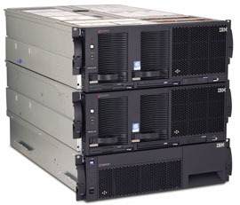
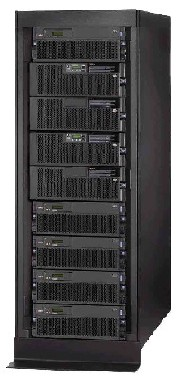
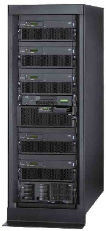

Андрей Ездаков
Современные информационные технологии стали не только удобным инструментом бизнеса, но и неотъемлемой частью деловых процессов большинства компаний и учреждений. Результаты деятельности предприятия, его эффективность сегодня напрямую зависят от стабильной и бесперебойной работы корпоративной информационной системы, а ИТ-подразделения, занимающиеся ее развертыванием и поддержкой, превращаются в жизненно важную для компании структуру.
Перемены в ИТ-сфере, особенно активно происходившие в последние 10-15 лет, не только способствовали ускорению бизнес-процессов, но и привели к возникновению ряда проблем, ранее не существовавших или не имевших такой остроты. Чрезвычайно актуальными стали не только вопросы производительности КИС и пропускной способности коммуникаций, но и задачи обеспечения совместимости программных продуктов и форматов данных, информационной безопасности и управляемости сложной инфраструктуры современной ИС масштаба предприятия.
Ядро любой информационной системы - серверы, поддерживающие основные бизнес-процессы. Как следствие, правильный выбор сервера становится весьма ответственной задачей. На принятие решения о его покупке все большее влияние оказывают не только технические характеристики оборудования и его первоначальная цена, но и простота обслуживания и администрирования, связанные с этим расходы (так называемая стоимость владения), возможности модернизации сервера в течение срока эксплуатации, сервисные обязательства и репутация поставщика.
На ИТ-рынке существует широкий спектр предложений серверов, отвечающих разным масштабам и функциональности бизнеса и на порядки различающихся по производительности и, естественно, стоимости. В России можно найти продукцию как отечественных, так и практически всех ведущих мировых производителей серверов. Очень разносторонне представлены на отечественном рынке серверы корпорации IBM.
Компания IBM (http://www.ibm.com/ru) делает акцент на всесторонней поддержке электронного бизнеса, поэтому предлагаемые ею серверы и системы хранения данных служат для решения различных аспектов этой проблемы. Кроме того, корпорация много работает над реализацией кластерных решений, и в силу этого практически все ее серверы из любого семейства могут использоваться при создании вычислительных кластеров средней или большой мощности. Для этого в IBM разработаны специальные аппаратные и программные системы, позволяющие объединять серверы в различных комбинациях.
Сейчас IBM предлагает российским пользователям четыре семейства серверов IBM eServer - xSeries, pSeries, iSeries и zSeries. Мы подробно рассмотрим три первых семейства.
Семейство IBM eServer xSeries
Семейство серверов IBM eServer xSeries - это системы на базе архитектуры Intel. В них используются процессоры семейств Intel Xeon, Pentium 4, Celeron и Itanium 2. Эти серверы охватывают широкий спектр возможных применений. Так, младшие модели семейства xSeries в основном рассчитаны на уровень обеспечения сервисов. Они используются как файл- и принт-серверы, серверы электронной почты, прокси-серверы, брандмауэры и т. п. Более мощные устройства нацелены на поддержку уровня приложений и выполняют функции деловой аналитики и планирования в системах класса ERP, CRM и SCM. Еще более высокопроизводительные серверы, как правило, ориентированы на работу на уровне баз данных. Они поддерживают обработку транзакций в режиме реального времени и функционирование больших массивов данных.
Модели этого самого многочисленного у корпорации семейства реализуются во всех трех видах корпусов, существующих на сегодня. Это и традиционные напольные или настольные варианты, и корпуса, предназначенные для установки в стандартную 19-дюйм монтажную стойку, и два новых решения IBM BladeCenter, объединяющие в едином шасси высотой 7U набор модульных (blade) серверов и других модулей, необходимых для решения задач заказчика.
Модели xSeries 205/206 представляют собой однопроцессорные серверы на базе процессоров Intel Pentium 4 с тактовой частотой 3,06/3,0 ГГц и объемом кэш-памяти 2-го уровня 512 Кбайт/1 Мбайт либо Intel Celeron с частотой 2,0/2,4 ГГц и объемом кэш-памяти 128/256 Кбайт соответственно. Эти устройства собираются в корпусах типа Tower или Rack высотой 4U с тремя или четырьмя отсеками для установки жестких дисков. Объем оперативной памяти xSeries 205 может составлять от 128 Мбайт до 2 Гбайт, а у модели xSeries 206 - от 256 Мбайт до 4 Гбайт. Для расширения функциональных возможностей серверов в них имеется пять слотов стандарта PCI (у модели xSeries 206 возможна конфигурация из трех слотов PCI и двух PCI-X). Сетевое взаимодействие с другими составляющими КИС поддерживается через сетевой адаптер типа Ethernet 10/100/1000; опционально в эти устройства устанавливается еще одна дополнительная сетевая плата.
К основным различиям этих моделей можно отнести организацию долговременной памяти. В xSeries 205 используется контроллер Ultra160 IDE, а в xSeries 206 - Ultra320 SCSI (или Serial ATA). Поэтому максимальное дисковое пространство у первой модели составляет 360 Гбайт, а у второй - 587 Гбайт. Кроме того, xSeries 206 оснащается интегрированным RAID-контроллером уровня 1.
Следующая модель семейства, xSeries 225, тоже собирается в корпусе типа Tower либо Rack высотой 4U. Однако этот сервер строится уже на базе двух процессоров Intel Xeon c частотой до 3,06 ГГц и объемом кэш-памяти 2-го уровня 512 Кбайт. Объем его ОЗУ составляет от 512 Мбайт до 8 Гбайт, емкость дисковой подсистемы, реализованной на основе двухканального контроллера Ultra320 SCSI и от четырех до шести посадочных мест для винчестеров, может достигать 880 Гбайт. Имеется интегрированный контроллер RAID уровня 1.
Функциональные расширения возможностей сервера обеспечивают пять слотов стандарта PCI (один PCI плюс четыре PCI-X); используется сетевой адаптер Ethernet 10/100/1000. Опционально может быть установлена еще одна сетевая плата.
Сервер xSeries 235, как и предыдущая модель, базируется на двух процессорах Intel Xeon, но уже c тактовой частотой до 3,2 ГГц, объемом кэш-памяти 2-го уровня 512 Кбайт и кэш-памяти 3-го уровня 1 Мбайт. Это устройство тоже оснащается двухканальным контроллером Ultra320 SCSI, но собирается в более просторном корпусе типа Tower или Rack высотой 5U. Поэтому емкость дисковой подсистемы, использующей до девяти посадочных мест с возможностью замены в горячем режиме и объединения в RAID-массив уровня 1, может составлять 1320 Гбайт.
Слотов расширения в этой модели также больше - шесть PCI (один PCI, три PCI-X и два Active PCI-X, позволяющих проводить установку и отключение устройств без отключения питания и перезагрузки, в горячем режиме). Сетевой интерфейс тот же, что и у трех предыдущих моделей. Объем ОЗУ в xSeries 235 может составлять от 512 Мбайт до 12 Гбайт.
Наконец, самое мощное устройство семейства xSeries, которое собирается в корпусе как Tower, так и Rack высотой 7U, - это модель xSeries 255. В этот сервер можно установить до четырех процессоров Intel Xeon MP с тактовой частотой 3,0 ГГц, объемом кэш-памяти 2-го уровня 512 Кбайт и кэш-памяти 3-го уровня 1/2/4 Мбайт. Объем оперативной памяти xSeries 255 - от 512 Мбайт до 24 Гбайт. Двухканальный контроллер Ultra160 ATA позволяет установить в 12 посадочных мест жесткие диски общей емкостью до 1760 Гбайт.
Сетевое взаимодействие устройства поддерживается адаптером Ethernet 10/100/1000, опционально устанавливается дополнительная сетевая плата. Количество слотов расширения у xSeries 255 - семь стандарта PCI (один PCI и шесть Active PCI). Кроме того, этот сервер штатно оснащается избыточными вентиляторами и блоком питания, который, как и основные, заменяется в горячем режиме.
Остальные модели семейства xSeries предназначены для установки в стандартные монтажные стойки, все они, кроме начальной, имеют интегрированные RAID-контроллеры.
Однопроцессорные серверы xSeries 305/306 базируются на процессорах Intel Pentium 2 и имеют конфигурацию, подобную моделям 205/206, объем ОЗУ у них может достигать 4 Гбайт. Несмотря на малую высоту корпуса, равную 1U, в них можно устанавливать до двух жестких дисков, которые поддерживаются соответственно контроллерами Ultra160 IDE и Ultra320 SATA. Помимо двух слотов функционального расширения стандарта PCI, эти серверы оснащаются двумя сетевыми адаптерами Ethernet 10/100/1000.
Модель xSeries 335 также собирается в корпусе высотой всего 1U, но построена уже на двух процессорах Intel Xeon с тактовой частотой до 3,2 ГГц с кэш-памятью 2-го уровня объемом 512 Кбайт и 3-го уровня - 1 Мбайт. В остальном это устройство похоже на две предыдущие модели, только максимальный объем ОЗУ может составлять 8 Гбайт, работу дисковой подсистемы в нем поддерживает адаптер Ultra320 IDE, а в некоторых версиях допускается возможность замены жестких дисков в горячем режиме.
В сервер xSeries 345 тоже устанавливается до двух процессоров Intel Xeon с тактовой частотой до 3,2 ГГц, кэш-памятью 2-го уровня объемом 512 Кбайт и 3-го уровня - 1 Мбайт. В отличие от модели xSeries 335, здесь имеется шесть отсеков для установки жестких дисков и пять слотов расширения PCI (один PCI и четыре PCI-X). Работой дисковой подсистемы управляет двухканальный контроллер.
В более мощном сервере xSeries 365 используется до четырех процессоров Intel Xeon MP с тактовой частотой до 3,0 ГГц, объемом кэш-памяти 2-го уровня 512 Кбайт и кэш-памятью 3-го уровня 1/2/4 Мбайт. Эта модель монтируется в корпус высотой 3U и может иметь объем оперативной памяти 1-32 Гбайт. Пять слотов расширения типа Active PCI позволяют заменять соответствующие платы в горячем режиме, а шесть отсеков - устанавливать жесткие диски (также заменяемые в горячем режиме) общей емкостью до 880 Гбайт. В горячем режиме заменяются и основные и избыточные вентиляторы и блоки питания, что значительно повышает отказоустойчивость сервера.
Модель xSeries 382 высотой 2U содержит до двух процессоров Intel Itanium 2 с тактовой частотой до 1,5 ГГц, объемом кэш-памяти 2-го уровня 256 Кбайт и кэш-памятью 3-го уровня 1/5/6 Мбайт. Объем ОЗУ этого сервера составляет до 16 Гбайт, а емкость дисковой подсистемы, устанавливаемой в два отсека, - до 293 Гбайт. Функциональное расширение поддерживается благодаря трем слотам Active PCI.
|  | Сервер корпорации IBM семейства xSeries.
|
Флагман семейства - самый высокопроизводительный сервер xSeries 445 в своем компактном корпусе высотой 4U вмещает до 32 процессоров Intel Xeon или Intel Xeon MP с тактовой частотой до 3,0 ГГц, объемом кэш-памяти 2-го уровня 512 Кбайт, 3-го уровня - 1/2/4 Мбайт и кэш-памяти 4-го уровня до 128 Мбайт. Объем ОЗУ у этой модели - от 2 до 64 Гбайт. Функциональные возможности сервера обеспечиваются за счет шести слотов Active PCI и специальной стойки расширения RXE-100, в которой можно разместить широкий набор различных компонентов (жесткие диски, устройства для внешних носителей информации, коммуникационные устройства и т. п.), необходимые для решения конкретных задач заказчика.
Практически все компоненты xSeries 445, в том числе и модули оперативной памяти, можно заменять в горячем режиме. В сочетании с большим ассортиментом управляющего и контролирующего ПО это позволяет строить на основе таких серверов специальные отказоустойчивые системы для центров обработки данных и других аналогичных применений.
Еще одна модель высотой 4U - xSeries 455 построена уже на 16 процессорах Intel Itanium 2 с тактовой частотой до 1,5 ГГц, объемом кэш-памяти 2-го уровня 256 Кбайт, кэш-памяти 3-го уровня - 3/4/6 Мбайт и 4-го уровня - до 64 Мбайт. Она имеет сходные технические характеристики и предназначена для решения практически тех же задач, что и xSeries 445.
Отдельной позицией в ряду моделей семейства xSeries стоят BladeCenter - специальные шасси высотой 7U, в которые можно устанавливать серверные или функциональные модули с возможностью замены в горячем режиме. Серверные модули представляют собой независимые серверы с одним или несколькими процессорами, оперативной памятью, дисковой подсистемой, устройствами управления и коммутации. Они подключаются к объединительной панели внутри шасси для совместного использования компонентов инфраструктуры, таких, как блоки питания, вентиляторы, устройства для работы с внешними носителями, коммутаторы и системные порты.
Сейчас корпорация IBM предлагает два варианта серверных модулей BladeCenter HS20/HS40. В первом может устанавливаться до двух процессоров Intel Xeon с тактовой частотой до 3,2 ГГц, во втором - до четырех Intel Xeon MP с тактовой частотой до 3,0 ГГц. Объем ОЗУ модулей - до 8 и 16 Гбайт соответственно, емкость дисковой подсистемы на двух посадочных местах - максимум 293 Гбайт. В BladeCenter HS20 используются два сетевых адаптера стандарта Ethernet 10/100/1000, а в старшей модели - четыре.
Unix-серверы IBM eServer pSeries
"Голубой гигант" продолжает продвигать на рынок свое семейство Unix-серверов eServer pSeries на базе процессоров Power4+ собственной разработки (к моменту выхода номера на рынке должны появиться новые серверы этого семейства на базе процессоров Power5). Эти устройства могут обрабатывать широкий спектр задач, начиная от организации электронного бизнеса и заканчивая сложнейшими вычислениями и моделированием в таких областях, как газо- и гидродинамика, прогнозирование погоды, решение современных задач биохимии и генетики, чрезвычайно требовательных к аппаратным ресурсам сервера.
Специалисты корпорации делят семейство pSeries на три группы - серверы начального, среднего и высшего уровня. К устройствам начального уровня относятся модели pSeries 615 и pSeries 630, каждая в двух модификациях: настольной и для установки в монтажную стойку; средний уровень представлен тремя серверами - pSeries 650, pSeries 655 и pSeries 670; и, наконец, наиболее производительный Unix-сервер IBM высшего класса - pSeries 690.
Младшая модель семейства, pSeries 615 версии 6E3, исполнена в настольном варианте, а pSeries 615 6C3 - в стоечном высотой 4U. Этот сервер оснащается одним или двумя процессорами Power4+ с тактовой частотой 1,2 или 1,45 ГГц с кэш-памятью трех уровней. Объем ОЗУ у этой модели составляет 1-16 Гбайт. Дисковая подсистема сервера размещается в четырех стандартных и четырех дополнительных отсеках с возможностью замены в горячем режиме; ее максимальный объем превышает 1 Тбайт. Существует и возможность организации RAID-массивов.
Шесть слотов PCI позволяют расширять функциональность pSeries 615. В сервере также есть три внешних отсека на передней панели для установки мультимедийного оборудования и устройств для работы с внешними носителями информации. Для работы в сети в нем имеются встроенные коммуникаторы Fibre Channel (FC) и стандартные выходы типа Ethernet 10/100.
Вторая модель начального уровня, pSeries 630, тоже имеет два варианта корпусного исполнения - башня (6E4) или для установки в 19-дюйм стойку высотой 4U (6C4). Этот сервер оснащается уже 1-4 процессорами Power4+ с тактовой частотой 1,2 или 1,45 ГГц. Объем ОЗУ у него может достигать 32 Гбайт, а суммарная емкость устанавливаемых жестких дисков (до четырех с заменой в горячем режиме) - 587 Гбайт. В эту модель встроены два адаптера стандарта Ethernet 10/100, есть три последовательных порта и один параллельный. Каждый сервер оснащен еще двумя дополнительными внешними отсеками для установки средств мультимедиа или накопителей на магнитных лентах.
Как и в предыдущей модели, в pSeries 630 имеется шесть слотов расширения PCI-X, но, в отличие от pSeries 615, старшая модель поддерживает технологию создания логических разделов (до четырех). Благодаря этому устройство можно разделить на несколько независимых виртуальных серверов, каждый из которых будет работать под управлением собственной копии ОС AIX 5L или Linux.
|  | Устройство из семейства eServer pSeries.
|
Модель среднего уровня pSeries 650 может содержать от 2 до 8 процессоров Power4+ с тактовой частотой 1,2 или 1,45 ГГц. Она предназначена для установки в монтажную стойку и имеет высоту 8U. Объем ОЗУ сервера - от 2 до 64 Гбайт. В стандартный комплект поставки этого устройства входит семь слотов расширения PCI-X, четыре отсека для установки жестких дисков с интерфейсом SCSI, встроенный сервисный процессор, сетевой адаптер Ethernet 10/100, четыре последовательных порта. Модель pSeries 650 позволяет создавать до восьми логических разделов.
До четырех логических разделов можно организовать на другом Unix-сервере среднего уровня - pSeries 655. Это устройство собирается в корпусе напольного типа и оснащается четырьмя или восемью процессорами Power4+ с тактовой частотой 1,7 ГГц и объемом кэш-памяти 3-го уровня 128 Мбайт. По основным параметрам этот сервер аналогичен предыдущей модели.
Последняя модель среднего уровня, pSeries 670, компонуется в напольном варианте и содержит четыре, восемь или 16 процессоров Power4+ с тактовой частотой 1,5 ГГц и объемом кэш-памяти 3-го уровня 128 Мбайт. Объем ОЗУ сервера может варьироваться в пределах от 8 до 256 Гбайт. Свой вклад в производительность этого устройства вносит специальная технология исполнения процессорных модулей (MCM), позволяющая разместить в одном небольшом модуле до восьми процессоров. Это устройство отличается также разнообразием возможных конфигураций как по суммарной емкости дисковой подсистемы, так и по доступным дополнительным функциям.
Для подключения к внешним сетям и периферийным устройствам сервер оснащается секцией накопителей с пятью отсеками и секциями ввода-вывода (до трех), в каждой из которых имеется 20 слотов расширения PCI или PCI-X. Имеется также 16 посадочных мест для жестких дисков стандарта Ultra320 SCSI с заменой в горячем режиме. Количество создаваемых логических разделов в pSeries 670 может достигать 16.
Unix-серверы IBM высшего уровня производительности представлены единственной моделью pSeries 690, в которую может устанавливаться до 32 процессоров Power4+ с тактовой частотой 1,5/1,7/1,9 ГГц. Общий объем оперативной памяти этого сервера меняется в пределах от 8 Гбайт до 1 Тбайт, а количество логических разделов, которые можно реализовать в pSeries 690, доходит до 32.
Будучи самой мощной Unix-системой корпорации IBM, pSeries 690 отличается и большой гибкостью конфигурирования, позволяющей реализовать широкий диапазон требований заказчика. В его стойке, помимо процессорных модулей, кэш-памяти и ОЗУ, располагается секция с пятью отсеками для дисковых или иных накопителей и от одной до четырех секций ввода-вывода (аналогично предыдущей модели). Для дальнейшего расширения функциональных возможностей сервера к нему можно подключить вторую стойку, а также использовать совместно с ним массивы хранения данных.
Семейство IBM eServer iSeries
Корпорация IBM создала семейство серверных продуктов iSeries, учитывая растущие потребности современного бизнеса в организации "вычислений по требованию". Эта линейка включает в себя множество инструментов, с помощью которых можно контролировать информационную инфраструктуру предприятия. Они обеспечивают высокую гибкость при выборе приложений; балансировку производительности системы в среде различных ОС; эффективное использование вычислительной мощности путем активизации дополнительных процессоров только при возникновении необходимости в них и т. д.
В основе серверов семейства iSeries лежит интегрированная архитектура, в них поддерживается многоплатформность на базе нового процессора корпорации - Power5 и ряда других нововведений. В этих системах объединены заранее протестированные базы данных, инструменты управления рабочей нагрузкой, системы хранения информации и обеспечения информационной безопасности. Использование технологии виртуализации позволяет динамически распределять и перераспределять ресурсы сервера и систем хранения данных в зависимости от уровней нагрузок и установленных приоритетов. Кроме того, устройства iSeries легко интегрируются с серверами IBM других семейств, что позволяет наращивать производственные мощности постепенно, используя уже имеющееся оборудование. Такой подход заметно снижает уровень затрат на развитие ИС.
Сейчас IBM предлагает два новых сервера этого семейства - iSeries i5 520 и iSeries i5 570 на базе процессора Power5 в конвертируемом корпусе, подходящем для установки как в традиционном напольном варианте, так и в 19-дюйм монтажную стойку. Модель iSeries i5 520 поставляется в разнообразных конфигурациях. В сервере установлено один или два процессора с уровнем производительности (показатель CPW) от 500 до 6000 единиц. Объем ОЗУ у iSeries i5 520 в максимальной конфигурации составляет 32 Гбайт, общая емкость дисковой подсистемы, в которую может входить до 287 жестких дисков, достигает 19 Тбайт.
В этом сервере имеется восемь интегрированных адаптеров для подключения до 18 серверов семейства xSeries. В нем возможна организация от двух до 20 логических разделов с поддержкой различных ОС: i5/OS, Linux или AIX 5L. Дополнительно к iSeries i5 520 можно устанавливать до 6 стоек с устройствами хранения, коммуникации и ввода-вывода. Наличие до 90 слотов расширения PCI и до 36 сетевых адаптеров позволяет очень широко варьировать функциональные возможности системы и ее пропускную способность в рамках офисной сети.
|  | Сервер для организации "вычислений по требованию" семейства iSeries.
|
Модель iSeries i5 570 оснащается процессорами Power5 (от одного до четырех) и собирается в корпус для установки в стойку. Максимальный объем ее ОЗУ в некоторых вариантах достигает 64 Гбайт, а количество жестких дисков доходит до 546, что позволяет создать дисковую подсистему емкостью 39 Тбайт. Количество логических разделов сервера, в зависимости от варианта исполнения, доходит до 20/40, число интегрированных адаптеров xSeries - 8/16 (возможно подключение 18/36 соответствующих серверов). При подключении 12 стоек расширения общее число слотов PCI достигает 71, а сетевых адаптеров - 96.
Обе модели поставляются в двух вариантах: Standard Edition или Enterprise Edition. В первом варианте предусмотрена предустановка ОС i5/OS для загрузочных процессоров и поддержка Web-приложений. Во втором вместе с сервером поставляется ряд дополнительных программных средств и аппаратных ресурсов, в том числе инструменты для ведения электронного бизнеса и средства управления электронными центрами.
Заключение
Один из основоположников и ведущих мировых производителей компьютерной техники корпорация IBM предлагает отечественным пользователям широкий выбор различных серверных платформ, способных удовлетворить инфокоммуникационные потребности как начинающего бизнеса, так и крупнейших корпоративных и государственных структур. Практически все устройства компании попадают к потребителям не как отдельный продукт, а как комплексные системы, в которых сочетаются программные решения, аппаратные платформы и коммуникационные устройства. В своих продуктах компания поддерживает все современные платформы и архитектуры.
Сервисное обслуживание продукции "Голубого гиганта" на территории России осуществляют специальные центры, имеющиеся в большинстве регионов нашей страны. Они выполняют как гарантийный ремонт техники в соответствии с условиями стандартного или специального гарантийного соглашения, так и послегарантийное обслуживание оборудования, его настройку и, если нужно, модернизацию.